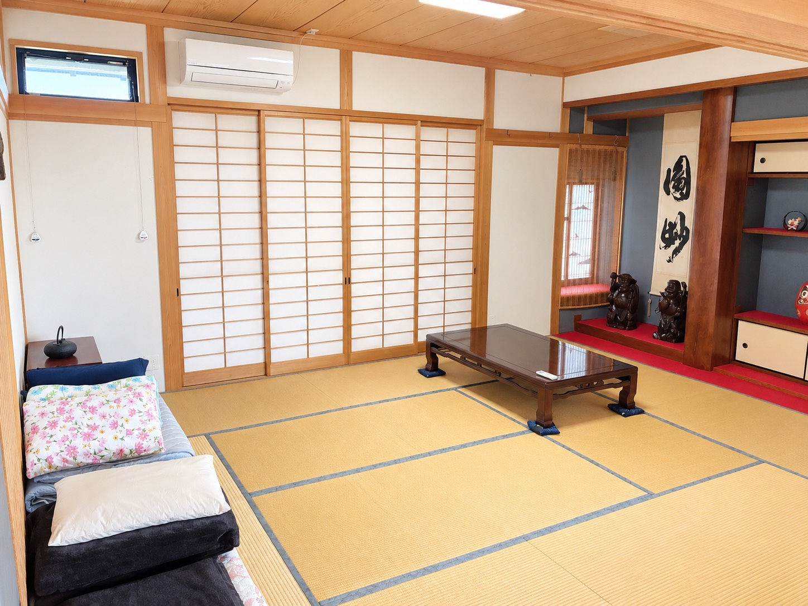
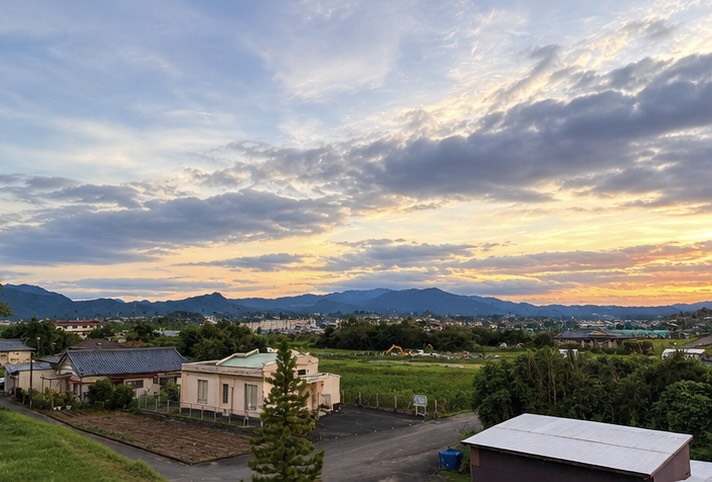
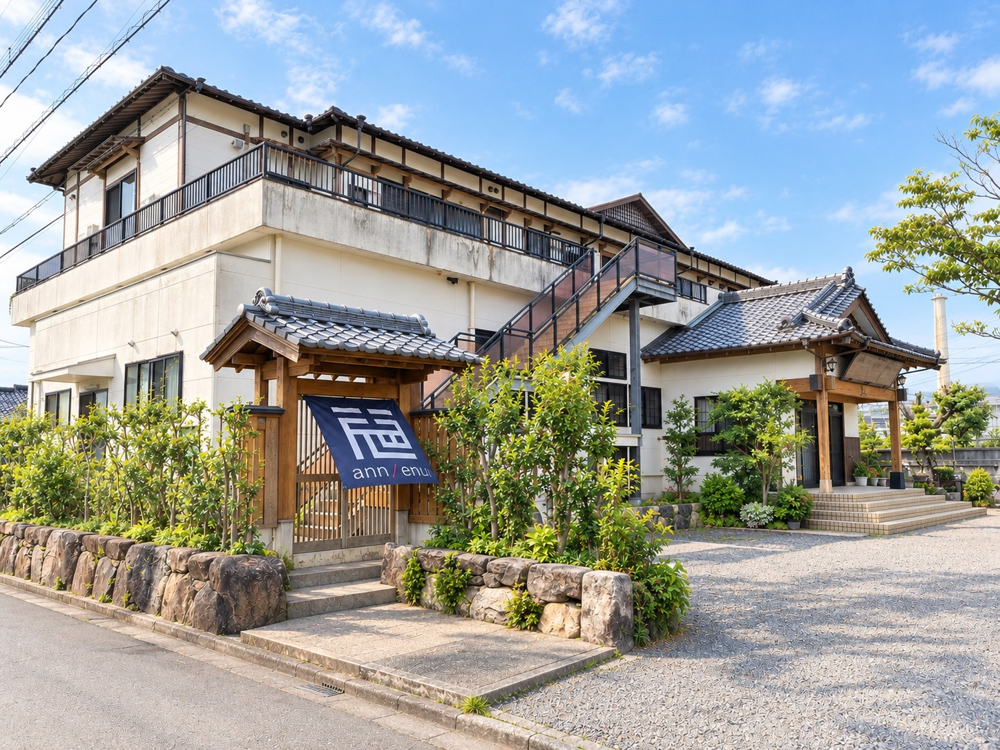
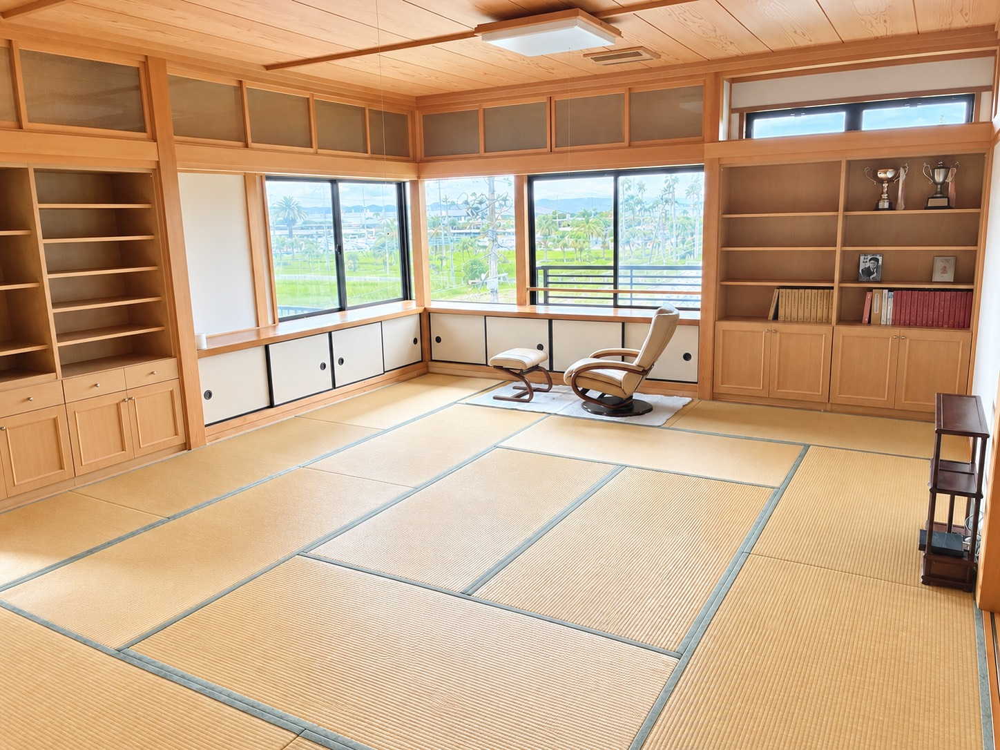
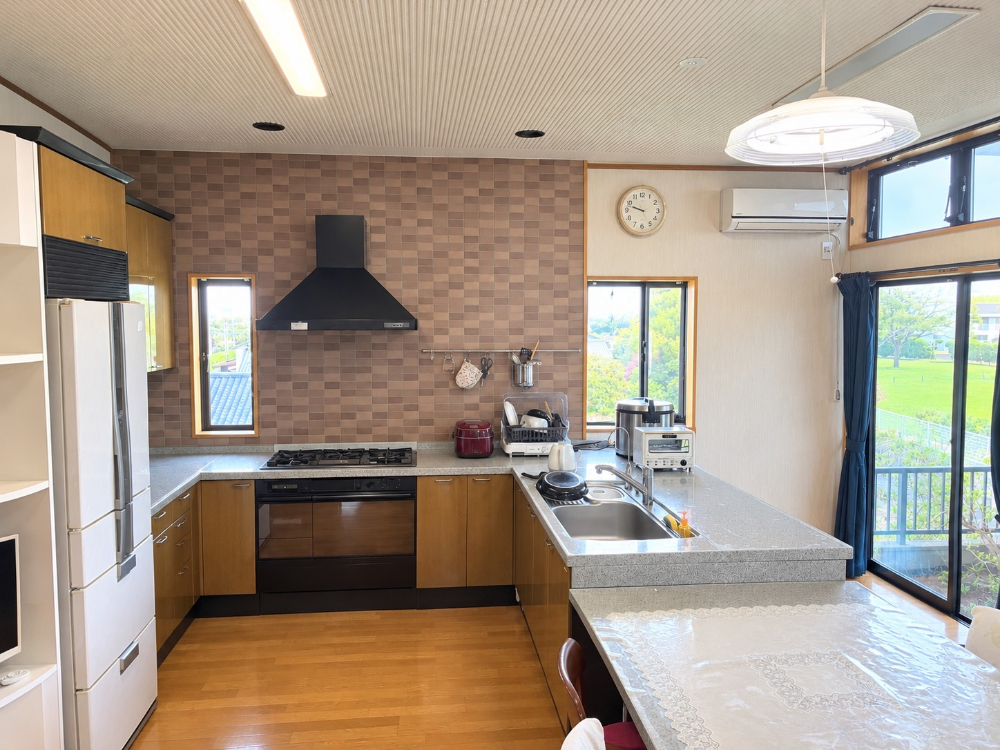
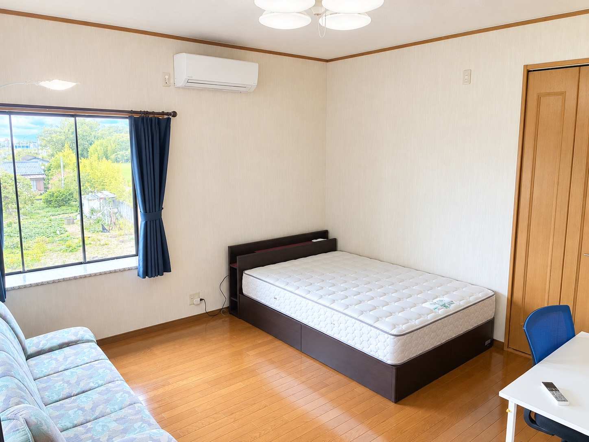
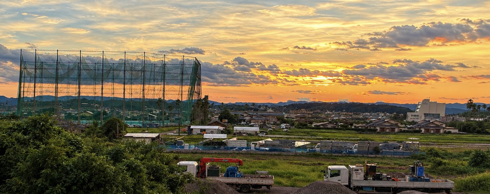
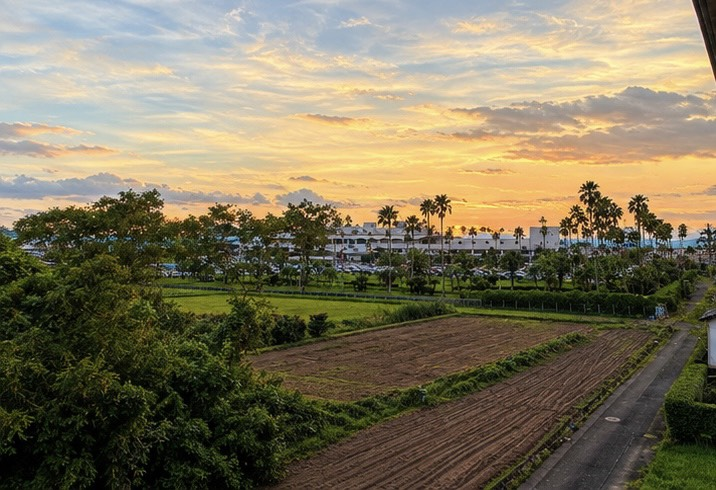
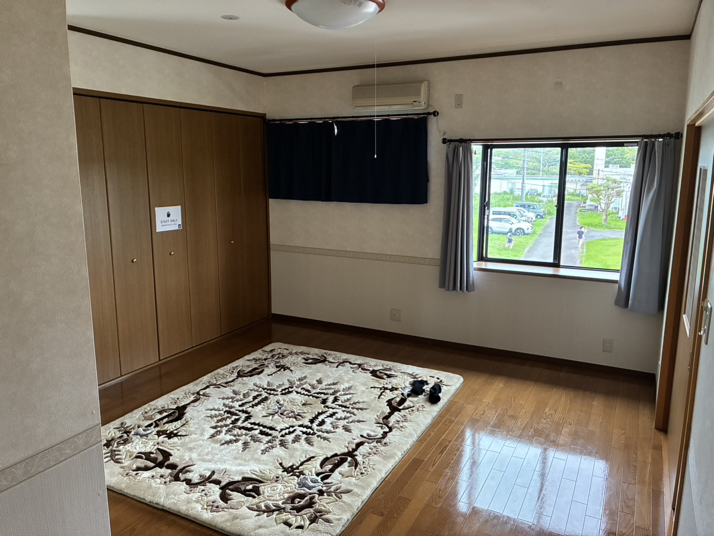
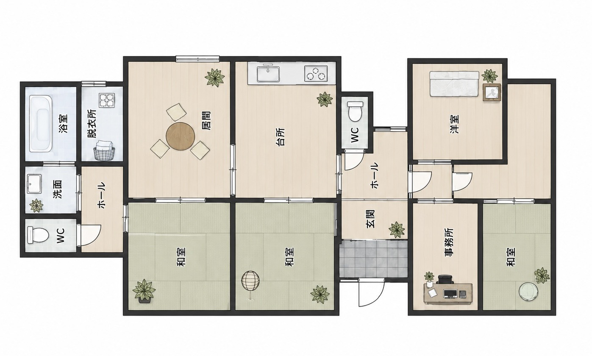

くつろぎの和室
畳の上で、ゆっくりと語らう時間

MIYAZAKI SPORTS & TRAVEL STAY
宮崎市田吉の民泊 志ann（Shi-ann）
合宿、大会観戦、チーム旅行の拠点に。
WELCOME TO SHI-ANN
宮崎空港に近く、スポーツ施設や市街地にも動きやすい田吉の宿。
和室の落ち着きと、仲間で集まれる広さを備えています。
試合に向かう朝も、観戦を終えた夜も、また帰ってきたくなる時間を。SHI-ANN

STAY TOGETHER
志annは、二階のワンフロアを利用する民泊です。和室4部屋、洋室1部屋、キッチンダイニングを備え、合宿・大会観戦・団体旅行での滞在を支えます。
通常は一棟貸しではありませんが、利用人数や内容に応じて一棟貸しもご相談いただけます。最大60名様まで対応可能です。
設備・利用条件を見るROOMS & COMMON SPACE
障子越しの光、畳の香り、窓の向こうの緑。大人数での合宿にも、ゆっくり過ごす旅にも合う、昔ながらの空間です。

畳の上で、ゆっくりと語らう時間

団体の滞在にも対応する広々とした空間

宮崎の食材を持ち寄り、自由な食事を

ベッドを備えた、使いやすい個室
VIEW FROM SHI-ANN


宮崎の山々、田畑、空港周辺の景色。スポーツの熱気が残る一日の終わりに、空の色がゆっくり変わっていきます。

FLOOR PLAN
和室4部屋と洋室1部屋、台所、居間、水まわりを備えています。団体での部屋割りや荷物の置き方なども、事前にご相談ください。

※間取り図は利用イメージです。利用可能な範囲や部屋割りは、ご予約時にご確認ください。
FACILITIES
食事は素泊まりです。食材や飲み物を持ち込み、キッチンダイニングで自由にお過ごしください。BBQも可能です。
LOCATION
所在地：〒880-0911 宮崎県宮崎市田吉4428-21
※到着方法・駐車場の詳細は、ご予約後にご案内します。
STAYING AT SHI-ANN
合宿・団体利用をご希望の場合は、人数や利用目的、到着予定時刻を事前にお知らせください。安心してお迎えできるよう準備します。
9:00〜19:00です。到着時刻が変更になる場合は、事前にご連絡ください。
館内は禁煙です。喫煙される場合は、指定場所をご利用ください。
BBQ・飲み会は可能です。近隣への配慮のため、音量・終了時刻は事前にご確認ください。
CONTACT & RESERVATION
空室確認・ご予約は、InstagramのDMまたはメールで承ります。
希望日、人数、利用目的（合宿・大会観戦・旅行など）をお知らせください。
1泊 お一人様 6,000円〜 ／ 学割あり
※料金、空室、一棟貸しの可否、学割の条件はお問い合わせ時にご確認ください。